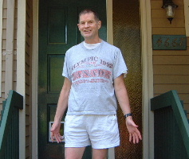

...making Linux just a little more fun!

Owen Townsend, UV Software Inc, 4667 Hoskins Rd North Vancouver BC, V7K2R3 Canada owen@uvsoftware.ca www.uvsoftware.ca Tel: 604-980-5434 Fax: 604-980-5404
Owen has a science degree from Ontario Agricultural College (now University of Guelph), and taught high school science, physics, and chemistry. Owen then switched careers to work many years for Sperry-Univac (which merged with Burroughs in 1986 to create Unisys).
Owen is now the president of UV Software Inc, which was founded in 1993 to develop and market software for converting mainframes to Unix and Linux. For detailed descriptions of the JCL, COBOL,& DATA conversions, please see the web site at 'http://www.uvsoftware.ca'.
Since 1993, UV Software has supplied conversion software, training, and assistance to convert about 50 mainframes to Unix or Linux. Please see the customer list and some customer comments on the web site at 'http://www.uvsoftware.ca/uvintro.htm#G1'.
Owen enjoys jogging on the trails in Lynn Headwaters park in North Vancouver. He has jogged for over 30 years, but only started running 1/2 marathons in 2006. Since then he has run 6 and surprised himself by winning (in his age group), the 2007 Toronto International 1/2 marathon in 1 hour 52 minutes.
You can see a few photos of Lynn Valley, jogging, skiing, kayaking, etc at http://www.uvsoftware.ca/photos.htm. Owen has 3 children and enjoys the 5 grandchildren (ages 1 to 5).